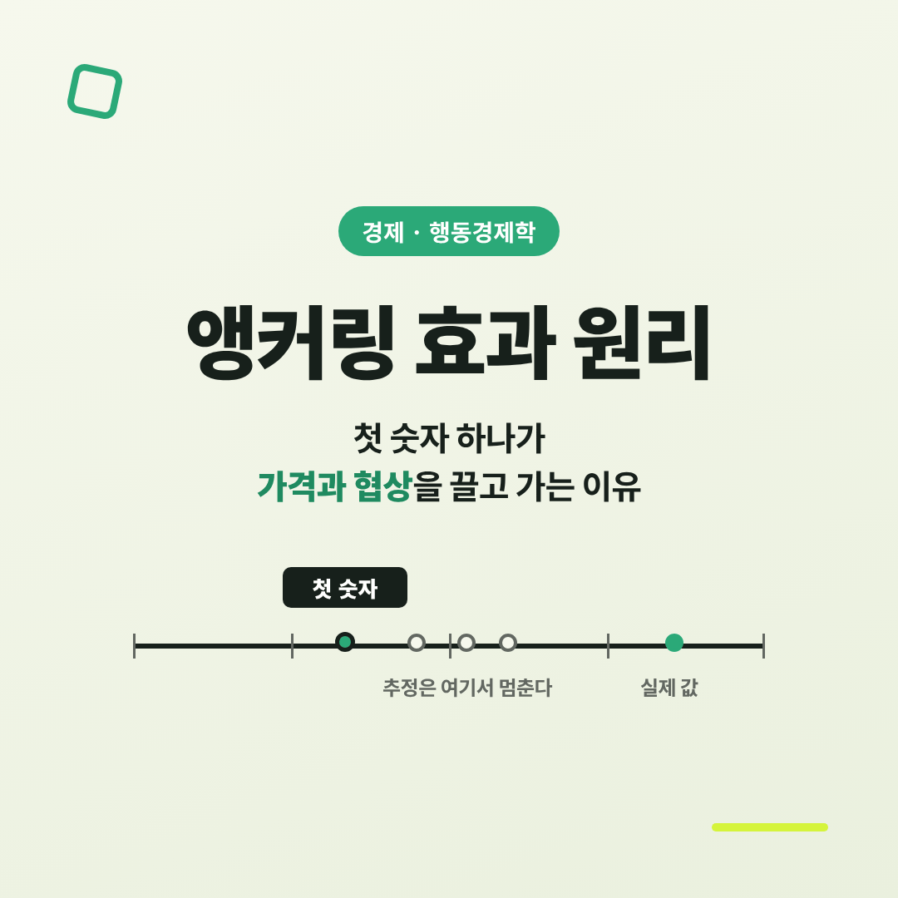
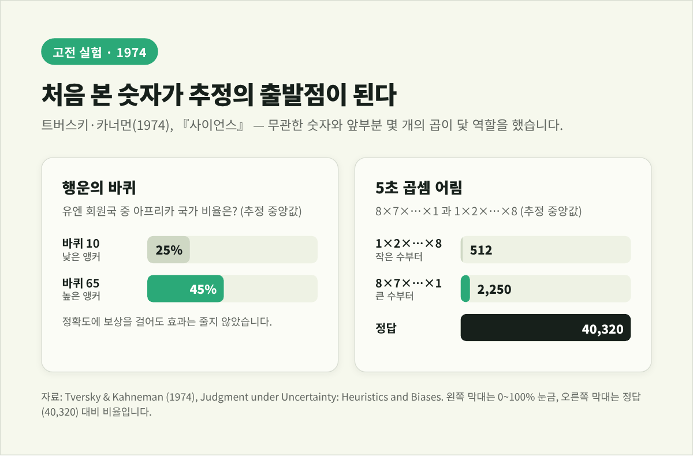
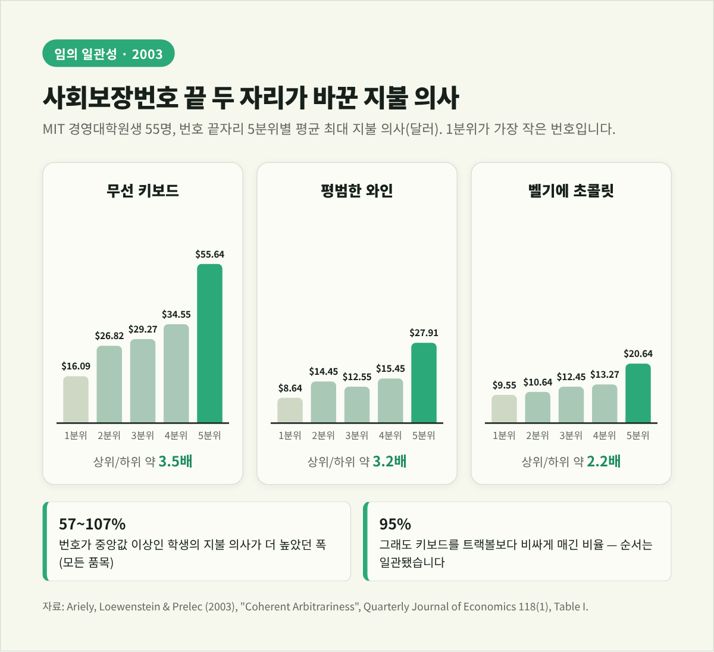
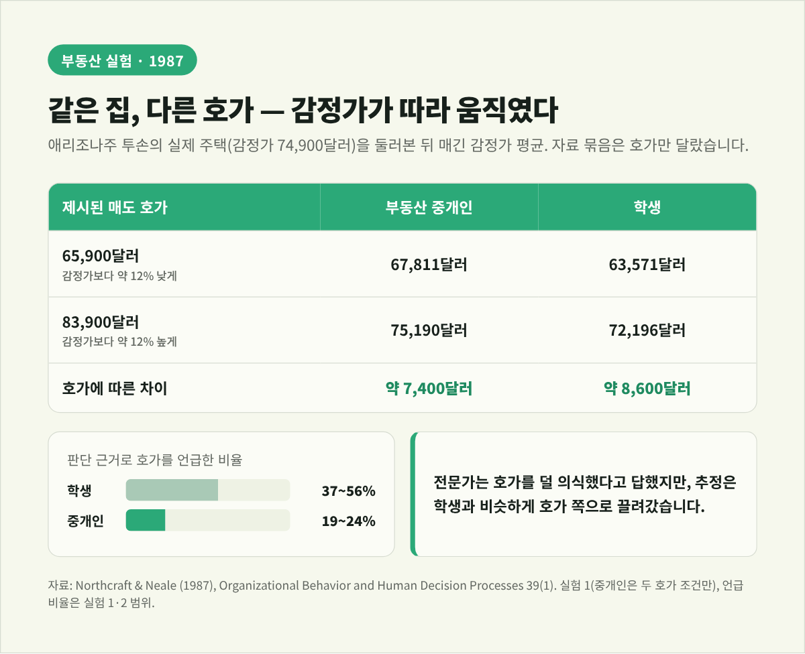
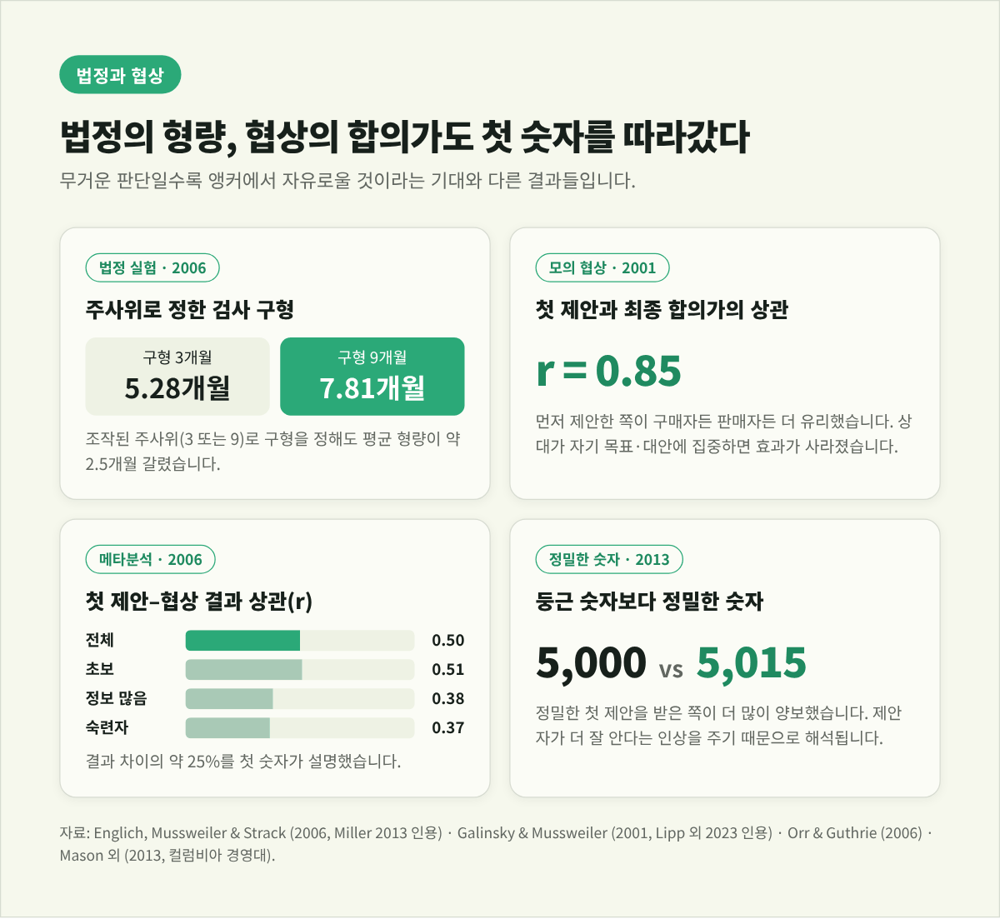
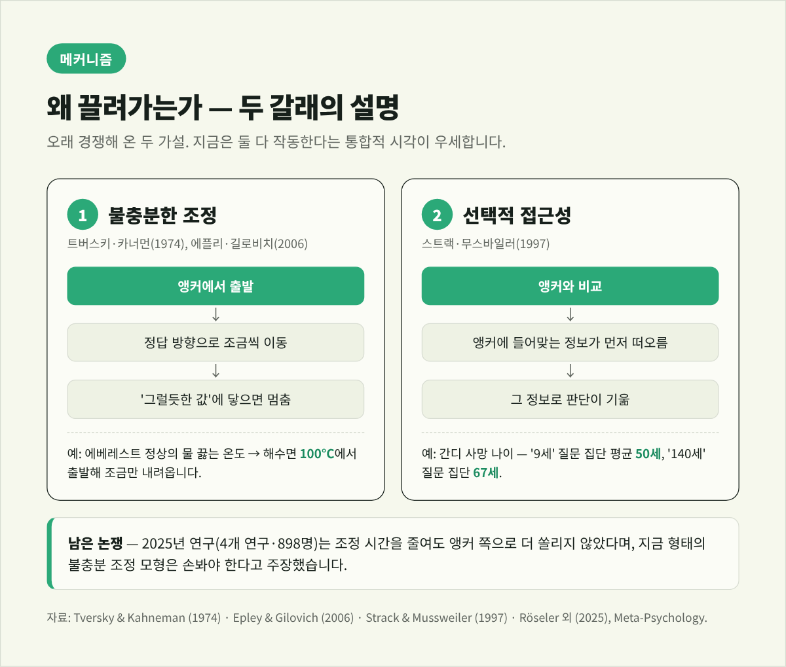
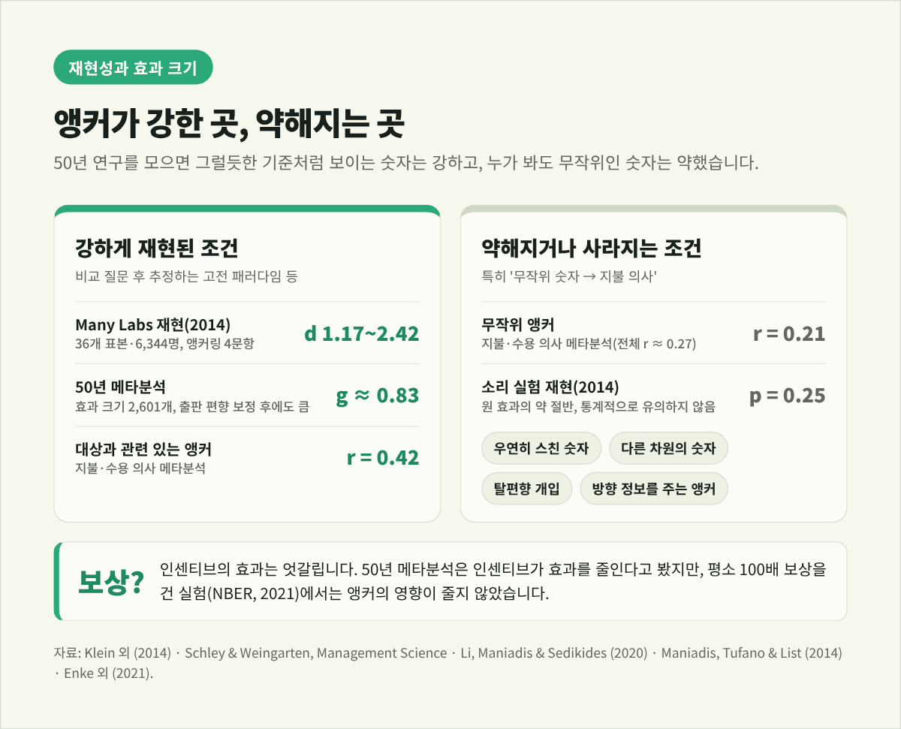

앵커링 효과 원리 — 첫 숫자 하나가 가격과 협상을 끌고 가는 이유

이번 글에서는 앵커링 효과, 우리말로 기준점 효과를 정리해 보겠습니다. 처음 본 숫자 하나가 이후의 가격 판단과 협상 결과를 어떻게 끌고 가는지, 그 근거가 된 실험과 최근의 재검증까지 함께 살펴봅니다.
먼저 요점을 세 줄로 적어 둡니다.
- 사람은 모르는 값을 추정할 때 처음 주어진 숫자에서 출발하고, 거기서 충분히 멀어지지 못합니다.
- 이 현상은 학생만이 아니라 부동산 중개인, 판사, 숙련 협상가에게서도 확인됐습니다.
- 다만 50년간의 연구를 모아 보면 효과가 강한 조건과 약해지는 조건이 뚜렷이 갈립니다.
행운의 바퀴에서 시작된 질문
앵커링이라는 이름은 1974년 『사이언스』에 실린 트버스키와 카너먼의 논문에서 나왔습니다. 두 사람은 이렇게 정의했습니다. 사람들은 어떤 초깃값에서 출발해 조정하는 방식으로 추정하며, 그 조정은 대체로 불충분하다는 것입니다.
가장 유명한 장면은 행운의 바퀴입니다. 연구진은 0부터 100까지 적힌 바퀴를 참가자 앞에서 돌렸습니다. 그리고 "유엔 회원국 가운데 아프리카 국가의 비율이 이 숫자보다 큰가, 작은가"를 먼저 묻고, 이어서 실제 비율을 추정하게 했습니다.
바퀴가 10에서 멈춘 집단의 추정 중앙값은 25%였습니다. 65에서 멈춘 집단은 45%였습니다. 바퀴가 질문과 아무 관련 없다는 것을 모두가 눈으로 보고 있었는데도 그랬습니다. 카너먼은 훗날 저서에서 이 바퀴가 사실 10과 65에서만 멈추도록 조작돼 있었다고 밝혔습니다.
논문에는 덜 알려진 실험도 하나 있습니다. 고등학생 두 집단에게 5초 안에 곱셈 값을 어림하게 했습니다. 한쪽은 8×7×6×5×4×3×2×1, 다른 쪽은 1×2×3×4×5×6×7×8을 받았습니다. 같은 식인데도 큰 수부터 본 집단의 중앙값은 2,250, 작은 수부터 본 집단은 512였습니다. 정답은 40,320입니다. 처음 몇 개를 곱해 본 값이 닻이 되어, 두 집단 모두 정답에서 한참 모자란 곳에 멈춘 것입니다.
정확하게 맞히면 보상을 주는 조건에서도 효과는 줄지 않았다고 논문은 적고 있습니다.

주민번호 끝자리가 정한 지불 의사 — '임의 일관성'
경제학에서 이 현상이 무겁게 다뤄진 계기는 2003년 『계간 경제학저널(QJE)』에 실린 애리얼리·로웬스타인·프렐렉의 연구입니다.
MIT 경영대학원 학생 55명에게 무선 키보드, 와인, 벨기에 초콜릿 같은 상품 여섯 가지를 보여줬습니다. 먼저 각자 사회보장번호 끝 두 자리를 달러 금액으로 보고 "이 가격이면 사겠는가"에 답하게 했습니다. 그다음 최대로 낼 수 있는 금액을 적게 했고, 일부는 실제 구매로 이어지도록 설계했습니다.
결과는 놀라웠습니다. 번호가 중앙값보다 큰 학생들은 작은 학생들보다 모든 품목에서 57~107% 높은 금액을 적었습니다. 상위 20% 집단과 하위 20% 집단을 비교하면 차이는 더 벌어집니다. 무선 키보드는 평균 55.64달러 대 16.09달러, 평범한 와인은 27.91달러 대 8.64달러였습니다.
그런데 흥미로운 지점이 하나 더 있습니다. 참가자의 95%는 키보드를 트랙볼보다 비싸게 매겼습니다. 고급 와인도 평범한 와인보다 높게 쳤습니다. 품목 사이의 순서는 합리적으로 유지됐다는 뜻입니다.
연구진은 이를 "임의 일관성(coherent arbitrariness)"이라 불렀습니다. 가격 수준 자체는 근거 없는 숫자에 따라 정해지지만, 그 뒤의 판단은 처음 정한 수준과 일관되게 움직인다는 것입니다. 그래서 겉보기엔 안정된 수요곡선이 그려지는데, 그 밑바닥의 선호는 생각만큼 단단하지 않을 수 있습니다.
불쾌한 소리를 다시 듣는 대가를 묻는 후속 실험에서도 같은 패턴이 나왔습니다. 50센트를 먼저 본 집단은 평균 59.60센트, 10센트를 본 집단은 39.82센트를 요구했습니다. 아홉 번을 반복해도 이 격차는 좁혀지지 않았습니다.

전문가도 예외가 아니었다 — 부동산 감정가 실험
"그건 잘 모르는 학생들 이야기 아니냐"는 반문이 자연스럽게 나옵니다. 노스크래프트와 닐의 1987년 연구는 바로 그 질문에 답하려 했습니다.
애리조나주 투손의 실제 주택을 학생과 부동산 중개인이 직접 둘러봤습니다. 동네 시세 등이 담긴 자료 묶음을 받았는데, 다른 내용은 같고 매도 호가만 달랐습니다.
감정가 74,900달러인 집에서 호가를 65,900달러로 본 중개인들은 감정가를 평균 67,811달러로 매겼습니다. 호가를 83,900달러로 본 중개인들은 75,190달러로 매겼습니다. 같은 집을 같은 날 보고도 7천 달러 넘게 갈린 셈입니다. 더 비싼 집으로 한 두 번째 실험에서도 중개인들의 추정은 호가를 따라 움직였습니다.
더 눈여겨볼 부분은 따로 있습니다. 판단 근거로 호가를 언급한 비율이 학생은 37~56%였지만, 중개인은 19~24%에 그쳤습니다. 전문가들은 영향을 덜 받았다고 믿었지만, 실제로는 학생과 비슷하게 끌려갔습니다.
이 결과는 실험실 밖의 데이터와도 맞물립니다. 미술품 경매에서는 같은 그림의 직전 낙찰가가 다음 경매가와 전문가 추정가를 끌어당긴다는 분석이 『아메리칸 이코노믹 리뷰』에 실렸습니다. 비싼 도시에서 이사 온 사람이 처음에는 더 비싼 집을 빌리고, 시간이 지나며 현지 가격에 적응한다는 연구도 있습니다(미국 가구 패널 928명 분석). 인수합병에서는 제시 가격이 대상 기업 주가의 52주 최고가 부근에 몰리고, 그 선을 넘으면 거래 성사 확률이 계단처럼 뛴다는 결과가 보고됐습니다.

법정과 협상 테이블 위의 첫 숫자
형량처럼 무거운 판단에서도 앵커는 작동했습니다. 잉글리히·무스바일러·스트랙(2006)은 형사 사건을 다루는 독일 법률가들에게 상점 절도 사건 자료를 주고, 검사 구형을 주사위로 정하게 했습니다. 주사위는 3이나 9만 나오도록 조작돼 있었습니다. 구형 3개월을 받은 집단의 평균 형량은 5.28개월, 9개월을 받은 집단은 7.81개월이었습니다. 구형이 주사위에서 나왔다는 것을 알면서도 2.5개월가량 차이가 난 것입니다.
기자가 "형량이 1년보다 높을까요, 3년보다 높을까요"라고 묻는 상황을 연출한 실험에서는 평균 25.43개월 대 33.38개월이 나왔습니다.
협상으로 옮기면 이야기는 더 실용적이 됩니다. 갈린스키와 무스바일러(2001)의 실험에서는 구매자든 판매자든 먼저 제안한 쪽이 더 유리한 결과를 얻었습니다. 화학 공장 매매를 모의한 실험에서 첫 제안과 최종 합의가의 상관계수는 0.85에 달했다고 보고됩니다.
여러 연구를 모은 오어와 거스리(2006)의 메타분석에서도 첫 제안과 협상 결과의 상관은 약 0.5였습니다. 결과 차이의 4분의 1 정도를 첫 숫자가 설명한다는 뜻입니다. 다만 정보가 많을수록(0.38), 숙련 협상가일수록(0.37) 그 힘은 약해졌습니다.
숫자의 모양도 중요했습니다. 5,000달러보다 5,015달러처럼 정밀한 첫 제안을 받은 사람이 더 많이 양보했다는 컬럼비아 경영대학원 연구가 있습니다. 제안한 쪽이 더 잘 알고 있다는 인상을 주기 때문으로 해석됩니다.
물론 첫 제안이 늘 이기는 것은 아닙니다. 지나치게 공격적인 첫 제안은 결렬률을 높이고 관계 만족도를 떨어뜨린다는 연구도 함께 쌓여 있습니다. 상대가 나보다 훨씬 많은 정보를 쥐고 있다면, 먼저 정보를 모은 뒤 제안하라는 조언도 같은 연구진에게서 나왔습니다.

가격표 속의 앵커 — 정상가, 할인율, 그리고 미끼
매장에서 마주치는 앵커는 대부분 '할인 전 가격'의 얼굴을 하고 있습니다. 참조가격 연구 20편을 모은 메타분석(크리슈나 외, 2002)은 할인율과 할인액 모두 체감 절약을 키우고, 할인율 쪽 효과가 더 크다고 정리했습니다. 정상가를 함께 적는 것은 큰 할인에서 체감 가치를 올리지만, 작은 할인에서는 별 차이가 없었습니다.
앵커를 걷어낸 기업이 겪은 일도 있습니다. 미국 백화점 JC페니는 2012년 잦은 세일 대신 상시 저가로 전략을 바꿨습니다. 그 전까지 매출의 50~70%가 할인가 판매였습니다. 그해 매출은 약 25% 줄었고 순손실은 9억8,500만 달러였습니다. 하버드 경영대 분석은 할인을 찾아다니던 고객 습관과 경기 요인을 함께 짚습니다. 앵커 하나로 설명할 수는 없지만, '원래 얼마였는데'라는 기준점이 사라진 것이 한 요인으로 거론되는 사례입니다.
비슷한 맥락의 '미끼(디코이) 효과'도 있습니다. 애리얼리가 소개한 잡지 구독 예에서 웹 59달러, 인쇄 125달러, 인쇄+웹 125달러를 제시하자 MIT 학생의 84%가 인쇄+웹을 골랐습니다. 아무도 고르지 않은 인쇄 단독 상품을 빼자, 인쇄+웹 선택은 32%로 떨어졌습니다. 엄밀히 말하면 이것은 숫자 앵커라기보다 비교 기준을 바꾸는 효과입니다. 원 개념을 제시한 연구자들도 실제 시장에서는 이렇게 깔끔한 미끼가 드물다고 인정했습니다.
한국에도 이 문제를 정면으로 다룬 경험이 있습니다. 1999년 도입된 오픈프라이스 제도는 권장소비자가격을 부풀려 놓고 할인하는 관행을 막으려는 취지였습니다. 2010년 7월 라면·과자·빙과·아이스크림까지 넓혔지만, 점포 간 가격이 2~3배 벌어지고 소비자의 93.4%가 불편하다고 답하면서 이 네 품목은 2011년 8월 다시 권장가 표시로 돌아갔습니다. 기준점을 없애는 것만으로는 문제가 풀리지 않았던 셈입니다.
왜 끌려가는가 — 두 갈래의 설명
메커니즘을 두고는 두 가설이 오래 경쟁해 왔습니다.
첫째는 '불충분한 조정'입니다. 앵커에서 출발해 조금씩 옮겨 가다가, 그럴듯한 값에 닿으면 멈춘다는 설명입니다. 에플리와 길로비치(2006)는 스스로 떠올린 기준점에서 이런 조기 멈춤이 뚜렷하다고 보고했습니다. 에베레스트 정상에서 물이 끓는 온도를 물으면, 사람들은 해수면의 100°C에서 출발해 조금만 내려옵니다.
둘째는 '선택적 접근성'입니다. 스트랙과 무스바일러(1997)는 앵커와 비교하는 순간 앵커에 들어맞는 정보가 기억에서 먼저 떠오른다고 봤습니다. 간디가 9세 이전에 죽었는지 물은 집단은 사망 나이를 평균 50세로, 140세 이후에 죽었는지 물은 집단은 67세로 추정했습니다. 둘 다 말이 안 되는 숫자인데도 판단은 끌려갔습니다. 연평균 기온이 20°C보다 높은지 물으면 여름 관련 단어를, 5°C를 물으면 겨울 단어를 더 빨리 알아본다는 실험도 이 설명을 뒷받침합니다.
예전엔 두 가설 중 하나를 고르는 논쟁이었습니다. 지금은 둘 다 작동한다는 통합적 시각이 우세합니다. 카너먼도 의도적인 조정과 자동적인 연상이 함께 일어난다고 정리했습니다.
다만 논쟁은 끝나지 않았습니다. 2025년 말 발표된 연구(뢰젤러 외, 4개 연구·898명)는 조정할 시간을 줄여도 추정이 앵커 쪽으로 더 쏠리지 않았다며, 현재 형태의 불충분 조정 모형은 손봐야 한다고 주장했습니다.

재현성 논쟁 — 강한 곳과 약한 곳이 갈린다
심리학의 재현성 위기 속에서 앵커링은 비교적 잘 버틴 편입니다. 36개 표본, 6,344명이 참여한 대규모 재현 프로젝트 '메니랩스(Many Labs)'에서 앵커링 문항 네 개는 모두 재현됐고, 효과 크기는 원 연구보다 오히려 크게 나왔습니다. 2,601개 효과 크기를 모은 50년 메타분석(슐리·와인가튼, 『매니지먼트 사이언스』)도 큰 효과(Hedges' g 약 0.83)를 확인했습니다. 출판 편향을 보정한 뒤에도 마찬가지였습니다.
그런데 경제학자들이 가장 관심을 두는 대목, 즉 '완전히 무작위인 숫자가 지불 의사를 바꾸는가'에서는 결과가 엇갈립니다. 마니아디스·투파노·리스트(2014)는 애리얼리 연구의 소리 실험을 다시 해 효과가 절반 수준이고 통계적으로 유의하지 않다고 보고했습니다. 반대로 이 재현이 너무 잡음이 커서 '효과 없음'을 증명한 것도 아니라는 반론도 나왔습니다. 주사위로 앵커를 만든 실험, 현장 실험에서는 효과가 매우 약하거나 없었다는 보고도 있습니다.
지불·수용 의사 연구 53개를 모은 메타분석(리·마니아디스·세디키데스)은 앵커와 금액의 상관을 약 0.27로 추정했습니다. 초기 연구가 보여준 것보다 작은 '중간 크기'입니다. 무작위 앵커는 0.21, 대상과 관련 있는 앵커는 0.42로 차이가 컸습니다.
50년 메타분석이 정리한 효과 약화 조건도 같은 방향을 가리킵니다. 우연히 스친 숫자, 다른 차원의 숫자, 무작위 숫자, 그리고 탈편향 개입이 있을 때 효과는 줄거나 사라졌습니다.
돈을 더 걸면 사라질까요. 여기서는 연구 결과가 엇갈립니다. 50년 메타분석은 인센티브가 있을 때 효과가 줄어든다고 정리했습니다. 반면 2021년 NBER 연구에서는 평소의 100배 보상을 걸어도 앵커의 영향이 줄지 않았고, 1974년 원 논문도 정확도 보상이 효과를 줄이지 못했다고 적었습니다. 보상만으로 풀리는 편향이라고 단정하기는 어렵습니다.
정리하면 이렇습니다. 그럴듯한 기준처럼 보이는 숫자, 즉 호가·구형·첫 제안·정상가 같은 앵커는 강력합니다. 반면 누가 봐도 무작위인 숫자의 힘은 대중서가 전한 것보다 작을 가능성이 큽니다.

기준점에 덜 끌리는 법 — 개인과 제도
가장 검증된 방법은 '반대 고려'입니다. 무스바일러 등(2000)은 경력 5년 이상의 정비사·딜러 60명에게 10년 된 중고차 값을 매기게 했습니다. 5,000마르크와 2,800마르크 앵커 사이의 추정 격차는 1,043마르크였습니다. 그런데 앵커가 틀린 이유를 스스로 적게 하자 격차가 347마르크로, 약 3분의 2 줄었습니다.
실천할 만한 점검을 몇 가지로 추려 봤습니다.
- 첫 숫자를 보면 "이 값이 틀렸다면 그 이유는 무엇일까"를 먼저 적어 봅니다.
- 협상에서는 상대의 첫 제안 대신 나의 목표가, 상대의 대안과 유보가격에 주의를 돌립니다.
- 할인율보다 실제 지불액과 최근 시세를 비교합니다.
- 중요한 가격 판단 전에는 독립적인 비교 정보를 최소 두세 개 확보합니다.
"나는 영향받지 않는다"는 자신감은 도움이 되지 않습니다. 경고를 받고 교정하라는 지시를 들어도 앵커 집단의 추정이 여전히 높았다는 연구가 있습니다. 부동산 중개인들이 스스로 호가를 무시했다고 믿었던 것도 같은 맥락입니다.
제도는 앵커의 '진실성'을 묻는 쪽으로 발전해 왔습니다. 유럽연합은 2022년 5월부터 할인을 알릴 때 직전 최소 30일 동안의 최저가를 이전 가격으로 표시하게 했습니다. 미국 연방거래위원회 지침은 할인 효과를 부풀리려 잠깐 올려 둔 가격을 기만으로 봅니다. 한국 공정거래위원회 고시도 종전거래가격을 과거 20일 정도 판매가 중 최저가로 보고, 대법원은 2022년 이 기준을 고려해 대형마트의 '1+1' 광고를 거짓·과장 광고로 판단했습니다. 앵커를 없애는 것이 아니라, 앵커가 거짓이 되지 않게 하는 방향입니다.
끝으로 한 가지만 덧붙이겠습니다. 앵커링 효과는 사람이 어리석다는 증거라기보다, 모르는 값을 어떻게든 정해야 하는 마음의 지름길에 가깝습니다. 정보가 없을 때 주어진 숫자에 기대는 것은 때로 합리적이기도 합니다.
문제는 그 숫자를 누가, 왜 먼저 내밀었는지 묻지 않을 때 생깁니다.
"첫 숫자는 답이 아니라 출발점일 뿐입니다."
다음에 할인 전 가격이나 상대의 첫 제안을 마주한다면, 그 숫자에서 한 걸음 물러나 내 기준을 먼저 꺼내 보시길 권합니다.
참고자료
- Tversky & Kahneman (1974), Judgment under Uncertainty: Heuristics and Biases, Science — sites.stat.washington.edu
- Ariely, Loewenstein & Prelec (2003), "Coherent Arbitrariness", QJE — www.cmu.edu
- Northcraft & Neale (1987), Experts, Amateurs, and Real Estate — www.smallprojectsbureau.com
- Colin Miller (2013), Anchors Away, Boston College Law Review (Englich 외 2006 수치 인용) — reference-global.com
- Galinsky & Mussweiler (2001), First Offers as Anchors — www.kellogg.northwestern.edu
- Lipp, Smolinski & Kesting (2023), First Offers and Anchoring in Negotiations — ncmr.lps.library.cmu.edu
- Orr & Guthrie (2006), Anchoring, Information, Expertise, and Negotiation — kb.osu.edu
- Columbia Business School, 정밀한 첫 제안 연구 보도자료 — business.columbia.edu
- Krishna et al. (2002), Price Presentation 메타분석 — papers.ssrn.com
- HBS Working Knowledge, What Went Wrong at J.C. Penney — www.library.hbs.edu
- JCK (2013), J.C. Penney Lost Nearly $1 Billion in 2012 — www.jckonline.com
- Huber, Payne & Puto (2014), Let's Be Honest About the Attraction Effect — people.duke.edu
- Beggs & Graddy (2009), Anchoring Effects: Evidence from Art Auctions — ideas.repec.org
- Simonsohn & Loewenstein (2006), Mistake #37 — ideas.repec.org
- Baker, Pan & Wurgler, Reference Point Theory of M&A — corpgov.law.harvard.edu
- Strack & Mussweiler (1997) 간디 실험 요약 — www.themantic-education.com
- Epley & Gilovich (2006), Psychological Science — www.psychologicalscience.org
- Röseler et al. (2025), Falsifying the Insufficient Adjustment Model — conferences.lnu.se
- Klein et al. (2014), Many Labs — research.unipd.it
- Schley & Weingarten, Fifty Years of Anchoring Effects — pubsonline.informs.org
- Data Colada [7], 재현 논평 — datacolada.org
- Li, Maniadis & Sedikides (2020), Anchoring in Economics 메타분석 — cdn.southampton.ac.uk
- Enke et al. (2021), Cognitive Biases: Mistakes or Missing Stakes?, NBER — nber.org
- Mussweiler, Strack & Pfeiffer (2000), Overcoming the Inevitable Anchoring Effect — spielverlagerung.de
- Bird & Bird (2025), EU 가격 인하 표시 규정 — twobirds.com
- 16 CFR 233.1 Former Price Comparisons — www.law.cornell.edu
- 네플라 위키, 가격할인 마케팅 기존 판매가 표시 — www.nepla.ai
- 아시아경제, 대법원 홈플러스 1+1 판결 — view.asiae.co.kr
- 경남신문, 오픈프라이스 4개 품목 권장소비자가격 전환 — knnews.co.kr